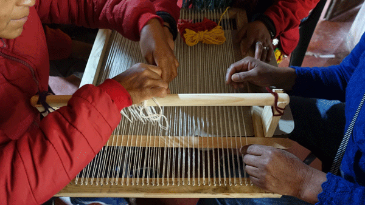

Inicio Proyectos
Proyectos y acciones realizados por Comunes.

Desde 2022 acompañamos al colectivo indígena Warmis de Nazareno, integrado por mujeres del municipio de Nazareno (Salta).
Ver proyectoLa Fundación desarrolla proyectos y acciones en torno a tres ejes principales:
● Gestión comunitaria y fortalecimiento organizativo: acompañamos a comunidades rurales, campesinas e indígenas en procesos de organización, producción y autonomía territorial.
● Educación, cultura y patrimonio biocultural: promovemos la valoración de los saberes locales a través de proyectos culturales y educativos.
● Ambiente y territorio: realizamos diagnósticos socioambientales, investigación participativa, acciones de cuidado y conservación ambiental.
Todos los proyectos de la Fundación Comunes comparten una perspectiva:
● Intercultural: respeto y diálogo entre saberes.
● De género: reconocimiento del rol de las mujeres en la sostenibilidad social y ambiental.
● De derechos: fortalecimiento de capacidades comunitarias para el ejercicio de derechos colectivos.
● Territorial: articulación con actores locales y enfoque situado en los ecosistemas y culturas.
Desde 2022 acompañamos al colectivo indígena Warmis de Nazareno, integrado por mujeres del municipio de Nazareno (Salta).
Durante 2024 y 2025 La Fundación Comunes acompañó el proceso organizativo de las mujeres tejedoras de la Comunidad Originaria Kolla Kondorwaira de Potrero de Castilla, fortaleciendo la recuperación de sus saberes y conocimientos textiles ancestrales. El trabajo puso en valor el conocimiento de las mujeres como patrimonio biocultural inmaterial y promovió la construcción de nuevas alternativas económicas desde una perspectiva comunitaria. Las acciones se desarrollaron en el marco de dos financiamientos: el primero, con el proyecto “Lanas y colores. Saberes textiles y patrimonio biocultural inmaterial de la comunidad Kondorwaira” (2025) que fue presentado en la 9.ª Convocatoria del Programa Puntos de Cultura del Ministerio de Cultura de la Nación; y el segundo, mediante el proyecto “Tejiendo Sueños. Consolidación del grupo Mujeres Tejedoras Kondorwaira” (2025), impulsado por la Secretaría de Coordinación Interministerial del Gobierno de Salta.